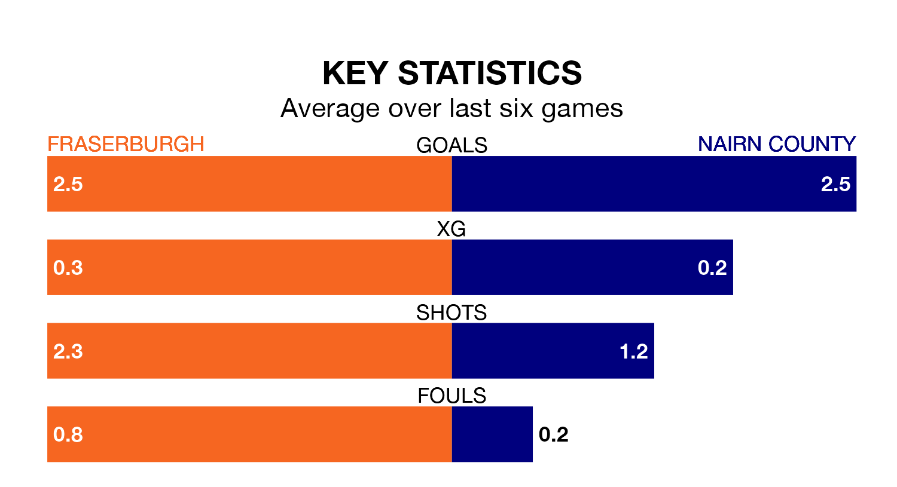

Fraserburgh host Nairn County on Saturday at Bellslea Park in the Highland Football League.
In their last league match, on Wednesday, Fraserburgh lost to Buckie Thistle 1-0 away.
Nairn also lost, 5-1 away at Formartine United.
With 63 goals in 24 games so far this season, Fraserburgh are the league's joint-second-highest scorers with 2.6 goals per game. And they are conceding fewer than average, letting in 31 goals at a rate of 1.3 per game.
Nairn are also above average scorers, with 2.0 goals per game, compared to a league average of 1.9. They have conceded 1.9 goals per game.
In the last 10 years, Fraserburgh and Nairn have played each other on 13 occasions. Fraserburgh won eight of them, Nairn one, and they drew four times.
On average, the Broch scored 2.2 goals and Nairn 1.2 in those matches.
Their last meeting was on January 21 2023, when they played out a 2-2 draw.
The Broch are fifth in the table after 24 games, of which they have won 15 and drawn three, earning 48 points.
County are one place behind the hosts in sixth, with 14 wins and one draw putting them on 43 points.
Fraserburgh are in mixed form in the Highland Football League, with three wins and a draw from their last six games.
With three wins and three losses over that period, the away team's form is slightly worse – they have taken nine points from 18, compared to Fraserburgh's 10.
Updated: 10:08 (UTC), 23/02/24